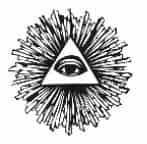

YİRMİ İKİNCİ BÖLÜM
KRİZ HİLALİ
İSLAMİ KÖKTENDİNCİLİK
Çevreci hareketin “büyümenin kısıtlanması” fikri, İlluminati tarafından da Soğuk Savaş’ın sonlarında Müslüman dünyasına karşı bir üçüncü dünya savaşı çıkarmak planı doğrultusunda kullanıldı. Son gösteri, bin Ladin’in Dünya Ticaret Merkezi’ne saldırısıyla sergilendi. Ancak, bu son için gereken koşullar yirmi beş yıldır hazırlanmaktaydı. Bu koşulun temeli, İslami terörizmin hızla çoğalması ve zaman içinde kullanılacak olan teröristler ağının genişletilmesiydi. Bu kurgu, Ayetullah Humeyni’nin İran’da başa geçirilmesiyle başladı. Bunu başarmanın yolu, Aspen Enstitüsü’nün ve Roma Kulübü’nün “büyümenin kısıtlanması” stratejisi üzerinden olacaktı. Robert Dreyfuss’un anlattığı gibi, Üçüncü Dünya’nın yoksullaştırılması İngiliz sömürgeciliğinin kasıtlı bir politikasıydı ve bunu yapmak için Suudi Arabistan gibi yozlaşmış yönetimleri ve Müslüman Kardeşler gibi terörist tarikatları kullandılar. Dreyfuss şöyle der:
“İngilizlerin Müslüman Kardeşler ‘i desteklemeleri Amerikalılar için şaşırtıcı değildir. Londra’nın sömürgelerini gelişmemiş durumda tutmak, Britanya İmparatorluğu’nun politikasıydı. İngilizler Orta Doğu’da her zaman yozlaşmış boy beyleriyle, rüşvet yedirilebilecek din adamlarını aramışlardır ve bu kişilerin hedefleri de her zaman İngilizlerin amaçlarıyla örtüşmüştür. İngiliz sömürge politikası, Orta Doğu’yu karanlık çağlara döndürmeye kararlı olan Müslüman Kardeşler sayesinde kurumsallaştı ve örgütlendi.”
Orta Doğu’da 1970’lerin sonunda şiddetin patlaması tesadüfen olmadı; Dr. Alexander King, Henry Kissinger, Zbigniew Brzezinski ve İngiliz casusu Bernard Lewis gibi İlluminati stratejistlerinin hassas planları sayesinde oldu. Huntington’un sert tartışmasından üç yıl önce, 1990 yılında, “medeniyetler çatışması” deyişini Atlantik Dergisi’nde “Müslüman Şiddetinin Kökleri” adlı makalesinde ilk kez kullanan kişi, Princeton Üniversitesi’nin Yakın Doğu Çalışmaları Kürsüsü öğretim üyesi ve eski İngiliz ajanı olan Bernard Lewis’di.
Bernard Lewis, 1979 yılında Avusturya’daki çok gizli Bilderberg toplantısına katıldı ve “Müslüman Köktendincilik” tartışmasına katkıda bulundu. İngilizlerin çok gizli Orta Doğu stratejisinin adı, “Bernard Lewis Planı” idi. Bu plan, Humeyni’nin ardındaki Müslüman Kardeşler hareketini öne sürüyor ve bütün Müslüman yakın doğunun dini ve etnik anlamda ayrışmasını ve parçalanmasını destekliyordu. Lewis; Lübnanlı Maruniler, Kürtler, Ermeniler, Dürziler, Azerbaycan Türkleri, Suriye Alevileri, Etiyopya Kıptileri, Sudan gizemci tarikatları, Arap boyları ve benzeri azınlıkların milliyetçi ayaklanmaların Batılılar tarafından desteklenmesi gerektiğini söylüyordu. Sonuçta Brzezinski’nin deyimiyle bir “Krizler Silsilesi” olacaktı. Carter yönetimi sırasında ulusal güvenlik danışmanlığı yapmış olan Brzezinski, küresel egemenliğin Sovyet Orta Asya’sındaki pek çok devlete bağlı olduğunu düşünüyordu. Brzezinski daha sonra Bernard Lewis tarafından İslami köktendinciliğin SSCB’nin altını oymak için “jeostratejik” bir kart olarak kullanılabileceğine ikna edildi.
Bu strateji, İlluminati kanallarının sağlayacağı her türlü gizli yöntem kullanılarak ve CIA’nın da Müslüman Kardeşler’in hizmetlerinden yeniden yararlanmasıyla, isyanlar çıkarmak ve İslam’ın imajını çirkinleştirmek için kullanıldı. Muhafazakârlık savunucusu görünmelerine karşın, Müslüman Kardeşler “küresel halifeliği” oluşturmaya, Orta Doğu toplumlarını yok etmeye, İlluminati’yle birlikte, gizemci ilkelere dayanan Yeni Dünya Düzeni’ni oluşturmaya çalışıyordu. Robert Dreyfuss’un tanımladığı biçimde:
“Müslüman Kardeşler’in ardındaki gerçek hikâye, casusluk romanları yazarlarının yaratıcılıklarını bile zorlayacak gibidir. Bir komplo olarak çalışır; üyeleri şifreli konuşmalar ve gizli parolalar kullanırlar ama resmi bir üyelik listesi yoktur, üyeleri Avrupalı özgür Mason örgütleri ve tarikatları gibi hücrelere ya da localara bölünmüştür. Müslüman Kardeşler ulusal sınırlara saygı göstermez ve bütün İslam dünyasına yayılır. Üyeleri arasında hükümet memurları, diplomatlar ve askerler yanında sokak çetecileri ve fanatikler de bulunur. Müslüman Kardeşler’in önderleri, ileri gelen finans kuruluşlarının tepesinde, halı kaplı lüks odalarda yaşarken, aşağı kademelerinde serserilerden ve suikastçılardan oluşan yarı askeri bir milis ordusu bulunur. Müslüman Kardeşler’in en üst kademeleri Müslüman değildir. Hristiyan, Yahudi ya da başka bir dine mensup da değildir. İç halkasındaki adamlar, gömlek değiştirir gibi din değiştiren adamlardır. Bütün olarak bakıldığı zaman Müslüman Kardeşler İslam’a ait değildir, eski Arabistan’ın İslam öncesi ana tanrıça inancına bağlı olan barbar tarikatlarına aittir. Mitoloji tüccarları bizleri Müslüman Kardeşler’in ve Ayetullah Humeyni’nin kökü derinlere dayanan bir ‘sosyal oluşum’ olduğuna inandırma çabaları aslında gerçeği yansıtmaz. Müslüman Kardeşler de, Müslüman inancına sahip insanların çok küçük bir bölümünden fazlasını temsil etmez.”
1955 yılında, Müslüman Kardeşler karargâhını Kahire’den Londra ve Cenevre’ye taşıyarak, oradaki güçlerle ilişkisini bariz duruma getirdi. Hasan Benna’nın (Banna) kızıyla evli olan önderleri Sait Ramazan, Cenevre’de İslami Çalışmalar Enstitüsü’nü kurdu. Kahire’de Nasır’ın öldürülmesine yataklık etmekle ve İsrail istihbaratıyla ilişki içinde bulunmakla suçlanıyordu. 1973 yılında Ramazan, önemli Azam ailesinden Selim Azam’la birlikte, Avrupa İslam Meclisi’ni Londra merkezli olarak kurdu.
Roma Kulübü ve Aspen Enstitüsü, İlluminati’nin İran’daki hedeflerini geliştirmek amacıyla Müslüman Kardeşler’le ittifak kurarak, Şah’ın devrilmesini çevreci ve ruhani kaygıları kullanmak kisvesi altından yönetti. Yine “büyümenin kısıtlanması” felsefesine dayanarak, şahı ülkesinde nükleer sanayi kurmak suçuyla devirdiler. “Küreselciler ve İslamcılar” adlı eserinde Peter Goodgame’in açıkladığı gibi:
“Enerjifiyatlarındaki artış sayesinde Üçüncü Dünya’nın kontrolsüz gelişmesi engellenmişti ama Arap Orta Doğu çok zenginleşti. İşte o zaman Küreselciler, durumu telafi edebilmek için müttefikleri olan İslamcılara döndüler. İnsanlığın gelişmesinin İslam’a aykırı ve Allah’ın kullarına karşı bir komplo olduğu yalanı kullanılarak, sanayileşmeye ve çağdaşlaşmaya saldırılacaktı.”
VAROLUŞÇULAR
Aspen Enstitüsü, şaha karşı kışkırtmalara başlarken, Roma Kulübü dikkatini Batı Avrupa’daki Müslüman Kardeşler’e çevirdi ve yapay, gelişmeye kapalı bir İslam modeline odaklandı. İran Şahı, işin en başında Kim Roosevelt ve Norman Schwartzkopf tarafından yönetilen, CIA destekli bir darbeyle tahta geçirilmişti. Amaç, 1953 yılında seçimle gelmiş olan Musaddık’ı devirmekti. Ancak Batı güçleri daha sonra şahın ülkenin nükleer sanayini geliştirme girişimlerine karşı çıktılar. Şah, önce İtalyan petrol şirketi ENI ile petrol anlaşmaları yaptı.
Robert Dreyfuss, Aspen Enstitüsü’nün 1975 yılında İran’ın Persepolis kentinde düzenlediği bir sempozyumdaki perde arkası tartışmalarında “Şahın sanayileşme programını tersine çevirmek ve İran’ı bir karanlık çağ rejimine dönüştürmek planı kurulduğunu” anlatır. Persepolis sempozyumuna katılanlar arasında Roma Kulübü’nden bir düzine kişi vardı. Bunlar arasında yönetim kurulu başkanı Aurellia Peccei’nin yanında, ikisi de Aspen Enstitüsü ve ABD Roma Kulübü üyeleri görevlileri olan Coudet Hukuk Firması’ndan Sol Linowitz, Cenevre Uluslararası Çalışmalar Enstitüsü’nden Kacques Freymond da bulunuyordu. Aspen Enstitüsü oturumu, tek bir konudan söz ediyordu: Modernleşme ve sanayi, İran toplumunun “ruhani ve manevi” değerlerinin altını oyuyordu ve bu değerler her şeyden daha çok korunmalıydılar.
1975 yılından sonra Aspen Enstitüsü, enstitünün İran’a gelmesinden de sorumlu olan Manuçer Gandi gibi ajanları yoluyla İran eğitim bakanlığıyla daha yakın bağlar kurdu. Kova Burcu Komplosu’nun kurucularından Gregory Bateson’un kızı olan Mary Catherine Bateson, Tahran’daki Demavend Koleji’nde ders verdi ve bu stratejideki önemli rolünü oynayarak, İran gençliğinin “anti-materyalist” isyanının tohumlarını ekti.
Profesör Ali Şeriati’ye de siyasi etkinliğini artırması komutu verildi. Robert Dreyfus, “Müslüman Kardeşler devrimini getiren İranlı öğrencilerin ve entelektüellerin arkasında, herkesten çok Şeriati vardı” der. Özgür Masonlardan olan ve İran üniversitelerinin önde gelen eğitimcilerinden olan Ali Şeriati, şaha karşı muhalefet halkasına çekilmişti. Şeriati’nin babası Ağa Muhammed Taki Şeriati’ydi. Kendisi de bir Özgür Mason’du ve İran’daki İslami Gerçeklerin Yayılması Merkezi’ni kurmuştu. Paris ve Tahran arasında sık gidip gelen Ali Şeriati, İran gençliği içinden bir tarikat kurdu.
Şeriati, İranlı öğrencilere Jean-Paul Sartre, Frantz Fanon, Albert Camus, Jacques Berque ve Louis Massingnon gibi anti-kapitalist, varoluşçu cephenin yazarlarını tanıştırdı ve bütün bunlar Persepolis’te toplanmış olan Roma Kulübü ağı üzerinden para desteği gördüler. Terörizmin ideolojik çerçevesini oluşturan İslam değildi, hepsi Nietzsche yandaşı olan bu düşünürlerdi. Bu düşünürlerin kendileri de, yalnızca düşünmekle kalmadıklarını, İlluminati destekli propagandacılar olduklarını ortaya koyan derneklere üyelerdi. Bakunin’in anarşist şiddet felsefesini bir arındırıcı güç olarak kullanmayı temel alan, sömürgecilik karşıtı mücadeleyi destekleyen fikirler sundular. Bu gelenek içindeki önemli bir kişilik, Alman düşünür Martin Heidegger’di. Heidegger, Özgür Mason olan ve Hegel’in arkadaşı Friedrich Schelling üzerinden Jacob Boehme’den, dolayısıyla Luriyancı Kabala’dan dolaylı olarak, etkilenmişti. Heidegger, Batı sömürgeciliğinin gemlerinden ve anayasal demokrasinin “boş laflarından” kurtulabilmek için, “halkın” şiddetli ve devrimci bir kararlılık göstererek, ilk kaderlerine dönmeleri gerektiğini savunuyordu.
Bu post-modernist devrim görüşü, Heidegger’den savaş sonrası Fransız soluna, özellikle de Stalinizm’den ve Çin’deki Kültür Devrimi’nden dolayı özür dilemeye pek meraklı olan Jean Paul Sartre’a geçti. Sartre’ın yazılarının pek çoğu, siyasette “kirli eller” gerektiğine ve sözde burjuva bir kan dökme hırsına kapılan bir insanın devrimci davaya hizmet edemeyeceğine değiniyordu. Hatta son dönem yazılarında, şiddetin kendi başına bile iyi bir şey olabileceğini öne sürdü. Sartre’ın himaye ettiği Martinikli yazar Frantz Fanon, “Yeryüzünün Lanetlileri” eserinde, Üçüncü Dünya insanlarının yalnızca özgürlüklerini kazanmak için değil, aynı zamanda Beyaz Adam ve onun sömürgeci yönetimi nedeniyle edinmiş olduğu aşağılık kompleksinden kurtulabilmeleri için de şiddete ihtiyaç duyduklarını söylüyordu. Fanon, Yeryüzünün Lanetlileri’ni, Fransız sömürge idaresine karşı savaşmak üzere 1953 yılında Ulusal Kurtuluş Cephesi’ne (FLN) katılmak için Cezayir’e geçtikten sonra yazdı. Pierre Beaudry’nin belirttiği gibi, Frantz Fanton ve Otto Skorzeny, FLN içinde ulusal bağımsızlık için terörizmi savunan kuramcılar ve komando eğiticilerdi.
CEZAYİR BAĞIMSIZLIK SAVAŞI
Otto Skorzeny’nin yardımlarıyla Genoud tarafından kurulmuş olan Cenevre’deki Arap Ticaret Bankası, 1958 yılında Cezayir Bağımsızlık Savaşı’ndaki iki tarafa da silah ve para sağladı. Aralarında Hitler’in koruması olan General Otto Ernst Remer’in de bulunduğu pek çok deneyimli Nazi savaşçısı, bağımsızlık isteyen Cezayirli isyancılara silah kaçırırken, başka Nazi danışmanlar da askeri eğitim sağladılar.
Skorzeny, Fransız ordusundaki ve Fransız Gizli Ordu Teşkilatındaki (OAS) aşırı sağcı bir grupla temasa geçerek, Başkan Charles de Gaulle’ün Cezayir’e bağımsızlık verme planlarını destekledi. OAS, bankacı Pierre Guillain Benouville tarafından dışarıdan yönetiliyordu ve yanında da CIA’dan Allen Dulles, Hitler’in Maliye Bakanı Hjalmar Schacht ve Genoud vardı. Francois Genoud, 1943 yılından beri Allen Dulles’le ve ortak destek verdikleri Cezayir’deki OAS’la temas halindeydi. Allen Dulles, İsviçre’deki Bern’de OSS istasyon şefiyken, Genoud’un Hitler ve Goebel hesaplarını İsviçre bankalarına aktardı. Genoud’un Amerikalılarla bağlantıları hakkında daha fazla şey öğrenilebilir ama bunun için iç işlerinin bu konudaki on altı belgenin gizliliğini kaldırması gereklidir. Ayrıca ABD’ye giriş vizesi talebi hakkındaki yirmi dokuz başka belge de hâlâ gizlidir.
OAS, 1945-1962 arasındaki Cezayir Bağımsızlık Savaşı’nı, aynı anda Fransız Cezayir’indeki sömürge yandaşlarına da, Cezayir Ulusal Kurtuluş Gücü’nü temsil eden gerillaları da kışkırttı. Bu komploda önemli bir kişi, faşist özgür Mason bir örgüt olan Sorguç’tan (Cagoule) kalma Francois Mitterand’dı. Mittrand’ın çabasıyla OAS Başkanı Jacques Soustelle, Cezayir genel valisi olarak atandı. OAS, hem OAS’ın, hem de FLN’nin önemli bileşenlerini eğiten Skorzeny’le iş birliği yaptı. Skorzeny o zamanlar CIA’nın İspanya’daki harekâtlarından sorumlu Jesus Angleton üzerinden, Mossad’ın Jakoben sağcı faşist ağlarında da yardımcı oluyordu. 1954 Kasım ayında, FLN gerillaları Fransız ordusuna bir dizi saldırı başlattılar ve Cezayir Müslümanlarını “bağımsız, demokratik, sosyal ve İslam ilkelerinden sapmayan Cezayir Devleti’nin yeniden kurulması” kavgasına davet ettiler. Buna yanıtı savunma bakanı değil, İç İşleri Bakanı Francois Mitterand verdi ve “Mümkün olan tek iletişim savaştır” dedi. Pierre Beaudry, bundan sonraki vahşeti şöyle anlatır:
“1955 Ağustos’unda FLN, Phillippeville’de kadın ve çocukları da içeren 123 kişiyi katletmek üzere harekete geçirildi. Cezayir Genel Valisi General Soustelle, ağır bir karşı saldırı emri verdi ve tahminlere göre 1273 gerilla öldürüldü (FLNbu sayının 12000 olduğunu söyler). Tahmini gerçek, arada bir yerde, 6000 civarında ölüydü. Kan davası başlamıştı. Fransız silahlı kuvvetlerinin ve polisinin başlattığı kan cümbüşünde binlerce Müslüman işkence gördü ve öldürüldü. Ana fikir, şiddetin durdurulması mümkün olmayan bir biçimde yükselmesini sağlamaktı.”
İRAN DEVRİMİ
1977 yılında Roma Kulübü ve Müslüman Kardeşler, İran’ın sanayileşmesine ket vurmak için, “İslam ve Batı” adı verilen bir örgüt daha kurdular. Cenevre merkezli olan bu örgüt, Müslüman Kardeşler’in önderi ve eski Suriye başbakanı olan Maruf Davalibi’nin ve Müslüman olmayan iki İlluminati üyesinin, Aurelio Peccei’yle, Gezegen Yurttaşları kurucusu, İngiltere’nin Kudüs uzmanı, Britanya’nın eski ABD elçisi olan Lord Caradon’un kontrolündeydi.
İslam ve Batı’nın destekçilerinden birisi, itibarlı Uluslararası İleri Tetkikler Enstitüleri Federasyonu’ydu. Bunun kurucuları arasında Aurelio Peccei, Hollanda Prensi Bernhard ve Robert Anderson vardı. “İslam ve Batı”, ilk planlama oturumunu İngiltere’deki Cambridge Üniversitesi’nde yaptı. Alexander King başkanlığında Uluslararası İleri Tetkikler Enstitüleri Federasyonu tarafından desteklenen “İslam ve Batı”, İslam’ın dönüştürülmesi için 1979’da bilim ve teknoloji geliştirilmesi amaçlı bir politika belirledi. Alexander King, aynı zamanda Roma Kulübü üyesiydi ve NATO kurucularındandı. Araştırmacı Dr. John Coleman’a göre, Avrupa işlerini bir üst oluşumun yönetmesi kararı verildiği zaman RIIA, Tavistock Enstitüsü’nü kurmuştu, o da ileride NATO’yı kuracaktı. “İslam ve Batı”, şöyle bir bildiri yayınladı: “Yaşamı daha ruhani olarak kavramamız gerekiyor. İslami bilimin ilk dersi, herkesin yaşamının temeli olan çevre dengesini bozmayacak bir orta yolun sağlanmasında ısrar etmektir.” Bu söylem, “Batı” bilimine ve Avrupa ile Kuzey Amerika’nın teknolojik gelişimine saldırmak amacıyla kullanıldı.
Şah çağdaşlaşma planını açıkladığı zaman, Roma Kulübü’nün perde arkası çabalarıyla Ayetullah Humeyni dini muhalefet lideri olarak ortaya çıktı. 1964 yılında İran’dan sürülmesine dek, Humeyni dini şehir Kum’da üslenmişti ve eski bir İngiliz istihbaratçısı olan Dr. John Coleman’a göre Özgür İran Radyosu onun “İngilizlerden aylık aldığını ve efendisi olan İngilizlerle sürekli temas halinde olduğunu” söylüyordu. Humeyni, İran’dan kovulunca Irak’a yerleşti. Orada yıllarca yaşadı ve 1978’te Irak hükümeti tarafından tutuklanıp sınır dışı edildi. Daha sonra Humeyni’ye Fransa’ya sığınmasını önermesi için Fransız Başkanı D’Estang’a baskı yapıldı. Humeyni’nin Fransa’da kalışı, Francois Genoud tarafından parasal olarak desteklendi. Coleman’ın yazdığına göre; “Humeyni Neauphle Şatosu’ndayken sürekli ziyaretçileri olmaya başladı ve bunların çoğu BBC, CIA ve İngiliz İstihbaratından geliyorlardı.” Sonra BBC, Humeyni’nin ana destekçisi oldu. Dr. Coleman diyor ki:
“İran’daki mollalara Humeyni’nin köylüleri ateşleyen konuşmalarının kasetlerini yollayan BBC’ydi. Sonra, BBC tarafından şahın SAVAK örgütünün yaptığı işkenceler dünyanın dört bir yanına yayıldı. 1978 Eylül ve Ekim aylarında BBC, Humeyni’nin devrimci zırvalarını doğrudan İran ve Fars bölgelerine yayınlamaya başladı. Washington Post şöyle yazıyordu: BBC İran’ın en büyük düşmanıdır. “
İran nüfusunun büyük bölümü, çoğunlukla da öğrenciler, kısa zamanda şah karşıtı oldular ve Ayetullah Humeyni önderliğinde “saf Şii İslam’a dönmenin memleketi kurtarmanın tek yolu olduğuna inandılar. Zbigniew Brzezinski tarafından yönlendirilen Carter yönetimi, Şah’ı devirip Humeyni’yi başa getirmek konusunda İngilizlerle iş birliği yaptı. 1980 yılında Humeyni, hizmet ettiği nihilist düşünceye uygun olarak, İran halkına “Yok edin, yok edin, yok edin, yok etmenin sonu yoktur” dedi. Şah, daha sonraları anılarında gücü kaybedişine yol açan olayları anlatırken, “Amerikalıların beni oradan indirmek istediklerini o zaman bilmiyordum, belki de bilmek istemiyordum” diye hayıflanacaktı.